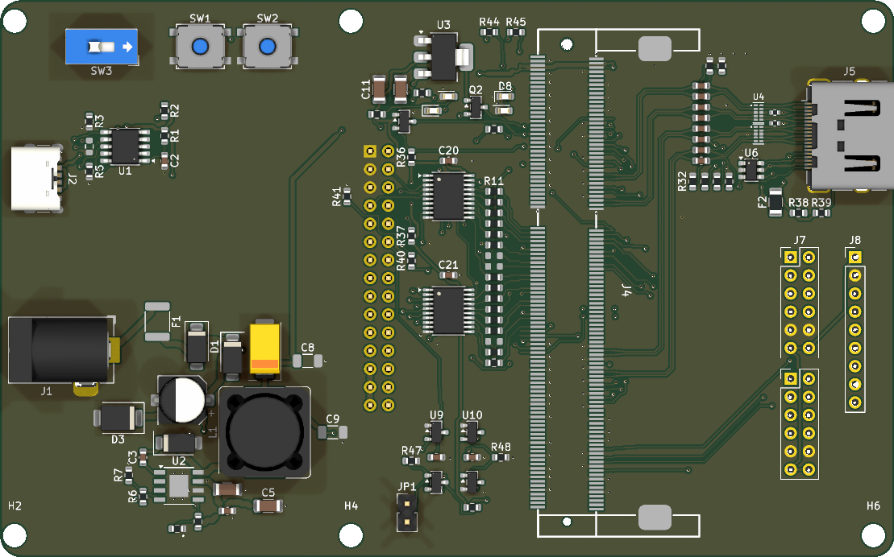
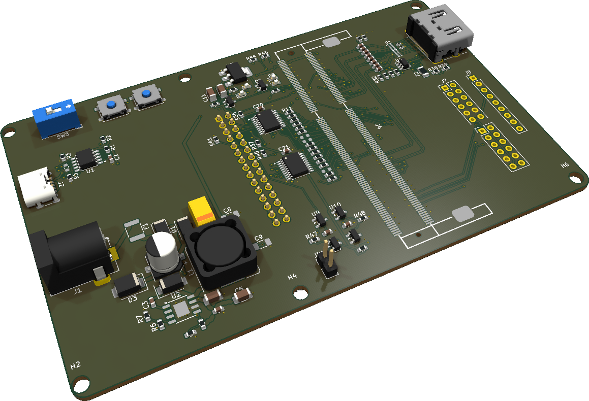
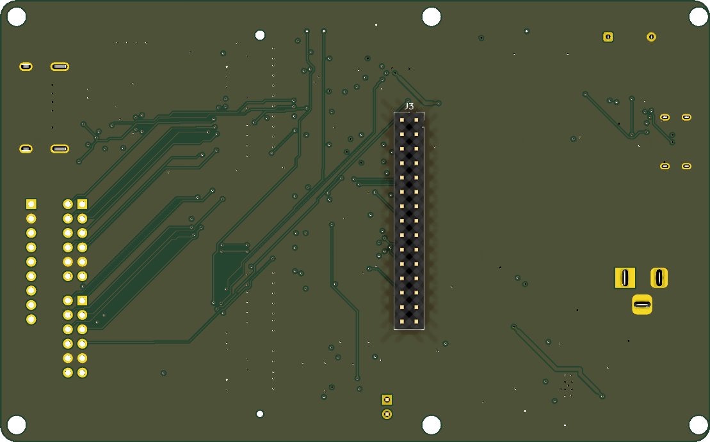

← 企画・設計仕様 ／ 詳細：発注準備（通信・電源）、HDMIシミュレーション第3版、3D均一直線の校正
1. 結論
2. 独立レビューの指摘
監査済みの設計を、記録された結果を信用せずに再実行し、図面・BOM・3D外観を目視で確認した。再実行の内容は9章と kicad/sim/pcb_report_review_2026-10-25.json に保存した。
| 区分 | 項目 | 内容 |
|---|---|---|
| 発注前に判断 | 左側M3穴の縁残りが少ない | H1・H2（x=4.06mm）は穴の縁から基板外形まで0.46mmしかない（他の穴は1.34mm以上）。DRCは銅と外形の距離を見るため、銅の無い取付穴は検出されない。加工時の欠け・ネジ締めでの割れ、M3なべ頭（φ5.5mm程度）の外形はみ出しが起こりうる。設計仕様（index.html 2章）では左側の穴は「キャリアは使用しない」としている。使わないなら穴を削除し、使うなら外形を左へ広げられるかTab5.stlで確認する。 |
| 組立時に確認 | Tab5側へ出るTHTのリード | 上面実装のTHT部品（J1、J2、J5、J6、J7、J8、JP1、SW3）のリードはTab5背面側へ出る。J3の嵌合で決まる隙間より短く切り、絶縁を確認する。特にJP1や、後付けするJ6〜J8のピンヘッダの尾部（一般に約3mm）は、そのままでは当たる可能性がある。 |
| 記録 | 回路図とPCBの等価性 | KiCadの等価性検査は426件を表示するが、内訳はすべて表記の差（ネット名の「/」、ライブラリ名、LCSC欄、取付穴のBOM属性）。ピン単位の比較（回路図575ピン）で不一致は0件。PCBだけにあるネットはJ1.3→GND、J4.MP→GNDで、DCジャックのスリーブ側とCoreソケット固定金具をGNDへ接続する意図した接続。回路図側へ反映しておくと、次回から等価性検査を合否判定に使える。 |
| 記録 | 1ピンだけのネット | PD_PG、TAB_SCL、TAB_SDAは1ピンだけに接続（ERC警告3件）。CH224Kのパワーグッドと、M5-BusのI2Cをキャリアで使わない設計どおり。意図を示すため未接続フラグにするとよい。 |
| 記録 | 降圧のENA分圧（R8 100k／R9 15k） | 12V入力時のENAは約1.57V。TPS5430のENA立上り閾値はデータシートで代表値1.3Vのみ（最小・最大の規定なし）で、余裕は約0.27V。BOM注記の「9V以下では起動しない」は保証値ではない。ただしTPS5430は9V入力でも5Vを出力できるため、安全上の問題ではない。 |
| 記録 | BOM注記の混同 | D4（降圧のキャッチダイオード）がD1/D2と同じ行で「reverse-polarity + OR」と注記されている。U9とU10の注記はどちらも「3.08V / 4.38V」。C10「10u/16V」は50V品C13585を共用（耐圧は上側なので問題なし）。注文時の照合で迷わないよう注記を分けるとよい。 |
| 記録 | kicad/README.md の状態欄が古い | 「Not manufacturing-ready（M5-Busの向きが未確認）」と、旧版の数値（SDD11 −16.1dB、SCD21 −33.6dB）が残っている。最新はM5-Bus確認済み、SDD11最大 −15.5dB、SCD21最大 −25.5dB。 |
| 記録 | 3Dモデルの欠落 | J4（SODIMMソケット）とTang Primer 20K Core本体の3Dモデルが無く、下の外観図には写らない。Core搭載時の高さ・HDMIコネクタとの干渉は実物で確認する。 |
3. 外観図
KiCad 3Dビューアで現行PCBから描画（d93af0b）。Coreとソケット（J4）は3Dモデルが無いため、シルクの枠だけが写る。



4. 基板仕様
| 項目 | 値 |
|---|---|
| 外形・層 | 125 × 78 mm、4層、1.6 mm |
| 積層 | 外層35µm／内層17.5µm、JLC04161H-7628相当。表層からIn1 GNDまで0.2104mm（HDMI解析の前提） |
| 部品 | 上面 107個、下面 1個（J3）、取付穴6 |
| 配線 | ネット134、配線2218本（総延長3.6 m）、ビア243 |
| 入力 | 安定化12Vのみ（DCジャック、またはUSB PDで12V要求）。24Vは不可 |
| M5-Bus | Tab5裏面を電池区画が左になる向きで見て、左列がGND／1番（2026-10-24 実物確認） |
取付穴
| 穴 | 中心 (x, y) | 穴径 | 外形までの残り |
|---|---|---|---|
| H1 | (4.06, 3.95) | 3.2 mm | 0.46 mm |
| H2 | (4.06, 75.95) | 3.2 mm | 0.46 mm |
| H3 | (51.06, 3.95) | 3.2 mm | 1.35 mm |
| H4 | (51.06, 75.95) | 3.2 mm | 1.45 mm |
| H5 | (124.06, 3.95) | 3.2 mm | 1.34 mm |
| H6 | (124.06, 75.95) | 3.2 mm | 1.34 mm |
5. 電源
| 区分 | 構成 |
|---|---|
| 入力保護 | PTC 3A（F1）、SMBJ15A（D3、クランプ24.4V）、SS54でDC/PDをOR（D1/D2）、100µF/35V |
| USB PD | CH224K（U1）で12V要求：CFG1/CFG2=Low、CFG3=内部プルアップ（R4はDNP） |
| Core用5V | TPS5430（U2）、15µH、10k/3.24kで約4.99V、出力220µF POSCAP（ESR最大40mΩ） |
| バススイッチ用3.3V | TLV1117LV33（U3）、セラミック出力で安定する品番 |
| Tab5への供給 | VIN（12V）をM5-Bus HVIN（25/27/29番）へ。Tab5の5V/BATは未接続 |
Core 5V端子までの銅経路の直列抵抗は 0.105〜0.124 Ω、0.5Aを1経路に流した場合の降下は約62 mV。 帰還抵抗±1%・基準±2%での設定範囲は 4.817〜5.167 V で、Coreの規定（4.5〜5.5 V）に入る。 接点・GND帰路・リップル・負荷変動は含まないため、初回通電で測定する。
6. パラレル通信
Tab5 → SN74CB3Q3245（U7/U8、Ioff対応）→ 33Ω → Core。両方の電源監視（TPS3839：Tab5 3.3V／Core 5V）が正常で、BUS ARMジャンパ（JP1、初期は開放）を閉じたときだけOEが有効になる。CLKはCoreの専用クロック入力（52番、GCLKT_1）。
| 信号 | M5-Busピン | Core SODIMMピン |
|---|---|---|
| D0 | 7 | 77 |
| D1 | 9 | 83 |
| D2 | 11 | 85 |
| D3 | 19 | 103 |
| D4 | 20 | 101 |
| D5 | 21 | 109 |
| D6 | 22 | 107 |
| D7 | 23 | 115 |
| CLK | 2 | 52 |
| RDY | 8 | 75 |
| DIR | 26 | 119 |
| AUX0 | 4 | 73 |
| AUX1 | 10 | 79 |
| AUX2 | 16 | 95 |
| AUX3 | 15 | 97 |
7. HDMIシミュレーション
実PCBの銅から抽出した経路に、2D電磁界ソルバの線路定数、AC結合キャップ、ESD（0.35pF）、499Ω枝（P/N別位置）、コネクタを接続した4ポートモデル。観察帯域は720p60に対して〜1.5GHz。今回のレビューで抽出から図の生成までを再実行し、結果は公開値と一致した。
| ペア | P/N長 | スキュー | Zdiff 最小/平均 | 499Ω枝 P/N | SDD11 371/742MHz | SDD11最大 | SDD21 371/742MHz | SCD21最大 |
|---|---|---|---|---|---|---|---|---|
| D0 | 59.01 / 59.01 mm | 0.00 mm | 103 / 112 Ω | 9.1 / 8.0 mm | -23.4 / -19.3 dB | -16.8 dB | -0.67 / -0.88 dB | -39.5 dB |
| D1 | 41.01 / 41.01 mm | 0.00 mm | 103 / 116 Ω | 0.6 / 0.6 mm | -23.2 / -19.7 dB | -17.3 dB | -0.63 / -0.80 dB | 数値床（理想対称） |
| D2 | 41.04 / 41.04 mm | 0.00 mm | 103 / 116 Ω | 2.2 / 7.5 mm | -24.5 / -20.9 dB | -15.5 dB | -0.63 / -0.79 dB | -25.5 dB |
| CK | 59.64 / 59.64 mm | 0.00 mm | 103 / 112 Ω | 8.2 / 6.4 mm | -23.3 / -19.4 dB | -17.4 dB | -0.67 / -0.88 dB | -35.3 dB |


複合条件（Core側Z × ESD容量）
| Core側Z | ESD差動容量 | SDD11最大（悪い方） | SDD21 @742MHz | −10dB目標 |
|---|---|---|---|---|
| 85 Ω | 0.20 pF | -11.1 dB (D1) | -0.99 dB | 満たす |
| 85 Ω | 0.35 pF | -10.6 dB (D2) | -0.97 dB | 満たす |
| 85 Ω | 0.50 pF | -9.1 dB (D2) | -0.96 dB | 外れる |
| 100 Ω | 0.20 pF | -17.8 dB (D1) | -0.88 dB | 満たす |
| 100 Ω | 0.35 pF | -15.5 dB (D2) | -0.88 dB | 満たす |
| 100 Ω | 0.50 pF | -12.9 dB (D2) | -0.90 dB | 満たす |
| 115 Ω | 0.20 pF | -15.7 dB (D1) | -0.92 dB | 満たす |
| 115 Ω | 0.35 pF | -14.5 dB (D2) | -0.96 dB | 満たす |
| 115 Ω | 0.50 pF | -13.1 dB (D2) | -1.00 dB | 満たす |
是正の効果と感度
| 条件 | SDD11最大 | SDD21 @742MHz | SCD21最大 |
|---|---|---|---|
| 理想（ESD・枝なし） | -17.6 dB (D0) | -0.44 dB | 数値床（理想対称） |
| 是正後（現在の枝） | -15.5 dB (D2) | -0.88 dB | -25.5 dB |
| 是正前の枝（21〜53mm） | -4.2 dB (D2) | -3.77 dB | -9.4 dB |
| P/N枝を同じ位置とした旧近似 | -15.5 dB (D2) | -0.88 dB | -25.5 dB |
| 比較案：短い対称枝（3mm×2、キャップ位置） | -16.1 dB (D2) | -0.86 dB | 数値床（理想対称） |
| ESD 0.2pF | -17.8 dB (D1) | -0.88 dB | -24.9 dB |
| ESD 0.35pF（基準） | -15.5 dB (D2) | -0.88 dB | -25.5 dB |
| ESD 0.5pF | -12.9 dB (D2) | -0.90 dB | -26.4 dB |
| Core 85Ω | -10.6 dB (D2) | -0.97 dB | -25.2 dB |
| Core 100Ω（基準） | -15.5 dB (D2) | -0.88 dB | -25.5 dB |
| Core 115Ω | -14.5 dB (D2) | -0.96 dB | -26.0 dB |


モード変換の最悪は D2（-25.5 dB）で、P/Nの499Ω枝の長さの差による。D1は対称のため理論上0。D2はFPGA側でシリアルビットを反転する（要求）。3D電磁界解析は均一直線の校正までで、設計判断には使っていない。
8. BOM
JLC実装 92個、手実装 7個（ほかにM3取付穴6）、実装しない 9個。原本は kicad/bom.csv、発注用は manufacturing/poc-2026-10-24/jlc-bom.csv。在庫と代替は注文時に確認し、ランドが合わない代替品は採用しない。
| 区分 | 部品番号 | 値 | 数 | LCSC | フットプリント | 注記 |
|---|---|---|---|---|---|---|
| PCBA（JLC実装） | F1 | PTC 3A hold | 1 | C47002391 | Fuse_1812_4532Metric | |
| PCBA（JLC実装） | D1, D2, D4 | SS54 | 3 | C22452 | D_SMA | reverse-polarity + OR (DC jack) |
| PCBA（JLC実装） | D3 | SMBJ15A | 1 | C699013 | D_SMB | YANGJIE 15V standoff, 24.4V specified clamp; regulated 12V PoC input only |
| PCBA（JLC実装） | C1 | 100u/35V | 1 | C2983388 | CP_Elec_6.3x7.7 | |
| PCBA（JLC実装） | J2 | USB-C PD in | 1 | C5246813 | USB_C_Receptacle_GCT_USB4125-xx-x-0190_6P_TopMnt_Horizontal | power-only USB-C 6P receptacle |
| PCBA（JLC実装） | U1 | CH224K | 1 | C970725 | SSOP-10-1EP_3.9x4.9mm_P1mm_EP2.1x3.3mm | PD sink, 12V request: CFG1=0 CFG2=0 CFG3=1(internal PU) |
| PCBA（JLC実装） | R1, R36, R37, R40, R6 | 10k | 5 | C25804 | R_0603_1608Metric | |
| PCBA（JLC実装） | C2 | 1u/50V | 1 | C15849 | C_0603_1608Metric | |
| PCBA（JLC実装） | R2, R42, R43, R44, R45 | 1k | 5 | C21190 | R_0603_1608Metric | |
| PCBA（JLC実装） | R3, R5 | 0R | 2 | C21189 | R_0603_1608Metric | CFG1 low (fit) |
| PCBA（JLC実装） | U2 | TPS5430DDAR | 1 | C9864 | TI_SO-PowerPAD-8_ThermalVias | |
| PCBA（JLC実装） | C3 | 10n | 1 | C57112 | C_0603_1608Metric | |
| PCBA（JLC実装） | L1 | 15u/4A | 1 | C2041333 | L_Bourns_SRR1260 | |
| PCBA（JLC実装） | R7 | 3.24k | 1 | C22994 | R_0603_1608Metric | Vout = 1.221*(1+10k/3.24k) = 4.99V; R7 C22994 1% |
| PCBA（JLC実装） | R47, R48, R8 | 100k | 3 | C25803 | R_0603_1608Metric | |
| PCBA（JLC実装） | R9 | 15k | 1 | C22809 | R_0603_1608Metric | External EN divider ~9.4V threshold; stays off at default USB 5V/9V |
| PCBA（JLC実装） | C4, C5 | 10u/50V | 2 | C13585 | C_1206_3216Metric | |
| PCBA（JLC実装） | C6 | 100n/50V | 1 | C14663 | C_0603_1608Metric | |
| PCBA（JLC実装） | C7 | 220u/10V POSCAP | 1 | C242173 | CP_EIA-7343-40_Kemet-Y | Panasonic 10TPB220M, 220uF 10V ESR max40mohm; TI reference output capacitor |
| PCBA（JLC実装） | U3 | TLV1117LV33DCYR | 1 | C15578 | SOT-223-3_TabPin2 | TI TLV1117LV33: ceramic-output stable, pin-compatible SOT-223 |
| PCBA（JLC実装） | C10 | 10u/16V | 1 | C13585 | C_1206_3216Metric | |
| PCBA（JLC実装） | C11 | 22u/10V | 1 | C12891 | C_1206_3216Metric | |
| PCBA（JLC実装） | R10, R11, R12, R13, R14, R15, R16, R19, R20, R21, R22, R23, R24, R26, R27 | 33R | 15 | C23140 | R_0603_1608Metric | |
| PCBA（JLC実装） | J4 | Tang Primer 20K Core | 1 | C367004 | DDR3-SMD_0705F0BE40F | Sipeed footprint (LCSC C367004) |
| PCBA（JLC実装） | C12, C13, C14, C15, C16, C17, C18, C19, C20, C21, C22, C23 | 100n | 12 | C14663 | C_0603_1608Metric | |
| PCBA（JLC実装） | R28, R29, R32, R33, R34, R35 | 499R | 6 | C23065 | R_0603_1608Metric | |
| PCBA（JLC実装） | R30, R31 | 499R | 2 | C4125 | R_0402_1005Metric | |
| PCBA（JLC実装） | U4, U5 | RCLAMP0524P | 2 | C293965 | DFN2510-10L_RCLAMP0524P | TMDS ESD array (DOWO DFN2510-10L): I/O 1,2,4,5, GND 3,8; the line is routed as continuous copper through strapped pads |
| PCBA（JLC実装） | U6 | SRV05-4 | 1 | C13612 | SOT-23-6 | DDC/HPD ESD as on the official Dock |
| PCBA（JLC実装） | F2 | PTC 500mA | 1 | C315893 | Fuse_1206_3216Metric | |
| PCBA（JLC実装） | Q1, Q2, Q3, Q4 | 2N7002 | 4 | C8545 | SOT-23 | DDC level shifter (pin1=G pin2=S pin3=D) |
| PCBA（JLC実装） | R38, R39 | 2.2k | 2 | C4190 | R_0603_1608Metric | |
| PCBA（JLC実装） | R41 | 20k | 1 | C4184 | R_0603_1608Metric | |
| PCBA（JLC実装） | D5, D6, D7, D8 | LED | 4 | C2286 | LED_0603_1608Metric | |
| PCBA（JLC実装） | U7, U8 | SN74CB3Q3245PWR | 2 | C470961 | TSSOP-20_4.4x6.5mm_P0.65mm | Ioff protected 8-bit passive bus switch; OE pulled high by default |
| PCBA（JLC実装） | U9 | TPS3839G33DBZR | 1 | C485802 | SOT-23 | 3.08V / 4.38V supervisor, 200ms typical release delay |
| PCBA（JLC実装） | U10 | TPS3839K50DBZR | 1 | C702204 | SOT-23 | 3.08V / 4.38V supervisor, 200ms typical release delay |
| PCBA（JLC実装） | R46 | 22k | 1 | C31850 | R_0603_1608Metric | |
| 手実装 | J1 | DC 12V ONLY | 1 | — | BarrelJack_Horizontal | DC barrel jack, centre positive (THT, hand assembly) |
| 手実装 | J3 | M5-BUS (to Tab5) | 1 | — | PinHeader_2x15_Tab5_Bottom | User confirmed 2026-10-24: rear view, battery left, pin1 GND on left; mirrored-column footprint |
| 手実装 | J5 | HDMI OUT | 1 | — | HDMI_A_Molex_208658-1001_Horizontal | TMDS from FPGA true-LVDS outputs (3.3V bank), AC coupled + 499R bias + ESD (official-Dock style) |
| 手実装 | SW1 | SW | 1 | — | SW_SPST_EVQP0 | |
| 手実装 | SW2 | RESET (Tab5) | 1 | — | SW_SPST_EVQP0 | pulls the M5-Bus RST/EN line (pin 6) low: resets the ESP32-P4 |
| 手実装 | SW3 | FPGA ON/OFF | 1 | — | SW_DIP_SPSTx01_Slide_9.78x4.72mm_W7.62mm_P2.54mm | slide switch: ON = open (buck runs), OFF = short EN to GND (FPGA 5V off). Tab5 keeps its own power button. Sits in the switch row with the two tact switches, clear of the board edge |
| 手実装 | JP1 | BUS ARM (open by default) | 1 | — | PinHeader_1x02_P2.54mm_Vertical | Fit shunt only after firmware GPIO ownership has been checked |
| 実装しない（DNP） | R17, R18, R25, R4 | 0R | 4 | C21189 | R_0603_1608Metric | Must remain DNP: CFG3 internal pull-up for 12V request |
| 実装しない（DNP） | C8, C9 | 47u/10V | 2 | C96123 | C_1206_3216Metric | |
| 実装しない（DNP） | J6 | PMOD1 | 1 | — | PinHeader_2x06_P2.54mm_Vertical | 2x6 PMOD-style, 3.3V. Pads only: pin header is hand-fitted later (DNP) |
| 実装しない（DNP） | J7 | PMOD2 | 1 | — | PinHeader_2x06_P2.54mm_Vertical | 2x6 PMOD-style, 3.3V. Pads only: pin header is hand-fitted later (DNP) |
| 実装しない（DNP） | J8 | GPIO pads | 1 | — | PinHeader_1x09_P2.54mm_Vertical | spare FPGA I/O (3.3V, bank 7): pads only, hand-fit a header or wires later |
9. 検査一覧（このレビューで再実行）
| 検査 | 結果 | 範囲 | スクリプト |
|---|---|---|---|
| DRC（警告・除外を含む全重大度） | 違反0、未配線0 | KiCad 10.0.6、トラックの全エラー | kicad-cli pcb drc |
| ERC | エラー0、警告159 | 回路図内のシンボルがライブラリ版と異なる156件、1ピンのネット3件 | kicad-cli sch erc |
| 回路図とPCBのネット照合 | 不一致0 | 回路図ネットリストの全575ピンとPCBパッドのネット | review_pcb_report.py |
| TMDS銅の連続性とピン対応 | 成功（終了コード0） | 8線すべて、Coreパッド→キャップ→コネクタを銅だけで到達。期待ピン番号と一致 | check_continuity.py |
| ストラップ除去の負の検査 | 成功（終了コード0） | 各線のESDストラップを1本ずつ外すと、その線だけが不連続になる | check_negative.py |
| TMDS銅の区間分類 | 成功（終了コード0） | 未分類0、重複0、幅の不一致0、ビア形状の誤り0 | check_classification.py |
| ESDランドとデータシートの照合 | 成功（終了コード0） | DOWO RCLAMP0524P（DFN2510-10L）の外形寸法と配置済みランド | check_esd_footprint.py |
| D1バイアス分岐 | 成功（終了コード0） | R30/R31は0402、分岐0.585mm、近傍GNDビアあり | check_d1_bias.py |
| TMDS直下のGND参照 | 成功（終了コード0） | 主配線・引き出し・ストラップ直下を0.25mm刻みで検査、全点が充填済みIn1 GND上 | check_ground_reference.py |
| パラレル配線と電源トポロジ | 成功（終了コード0） | 15信号のM5-Bus↔Coreピン、バススイッチ、監視IC、OE回路など32項目 | check_parallel_power.py |
| Core 5V銅経路の抵抗 | 成功（終了コード0） | Core 5V各端子までの直列抵抗と電圧降下（銅のみ） | check_power_dc.py |
| M5-Busの向き | 成功（終了コード0） | 実物確認した四隅（1=GND、2=CLK、29=VIN、30=未接続）とTMDS形状の不変 | check_mbus_revision.py |
| 故障注入：区間分類 | 成功（終了コード0） | 11ケース | test_classification_check.py |
| 故障注入：D1分岐 | 成功（終了コード0） | 4ケース | test_d1_bias_check.py |
| 故障注入：ESDランド | 成功（終了コード0） | 13ケース（回転・裏面反転を含む） | test_esd_check.py |
| 故障注入：パラレル・電源 | 成功（終了コード0） | 10ケース（M5-Bus列の左右反転を含む） | test_parallel_power_check.py |
| チャネルモデルの再現 | 9ファイル同一 | 抽出→線路→Sパラメータ→図 | tmds_channel.py ほか |
| ハッシュ台帳 | 155ファイル一致 | manifest_r3.json の全ファイル | make_manifest.py |
DRCが通っても、M5-Busの機械的な嵌合、実装業者の回転規約、実機での通信は証明しない。JLCの部品プレビューでU2、U4/U5、U7/U8、U9/U10、C7、J2、J4の端子1・極性を照合する。
10. データと再現手順
製造データ一式 ZIP（ガーバー、ドリル、JLC BOM/CPL、IPC-D-356、実装図、DNP表、手実装表）／ 上面実装図 ／ 下面実装図


| コマンド | 内容 |
|---|---|
python -X utf8 kicad/sim/review_pcb_report.py | DRC・ERC・ネット照合・全検査・チャネルモデル再現・台帳照合・3D描画（KiCad 10のkicad-cliとPythonを使用） |
python -X utf8 kicad/sim/make_pcb_report_page.py | このページ（数値はすべてJSONとbom.csvから読む） |
PCB SHA-256（改行LF正規化）：504e7f908d2295b43914edb1df9449e365dc87b77c5a415ac059950e3cdf2fe4。製造データの元PCBと一致：はい。